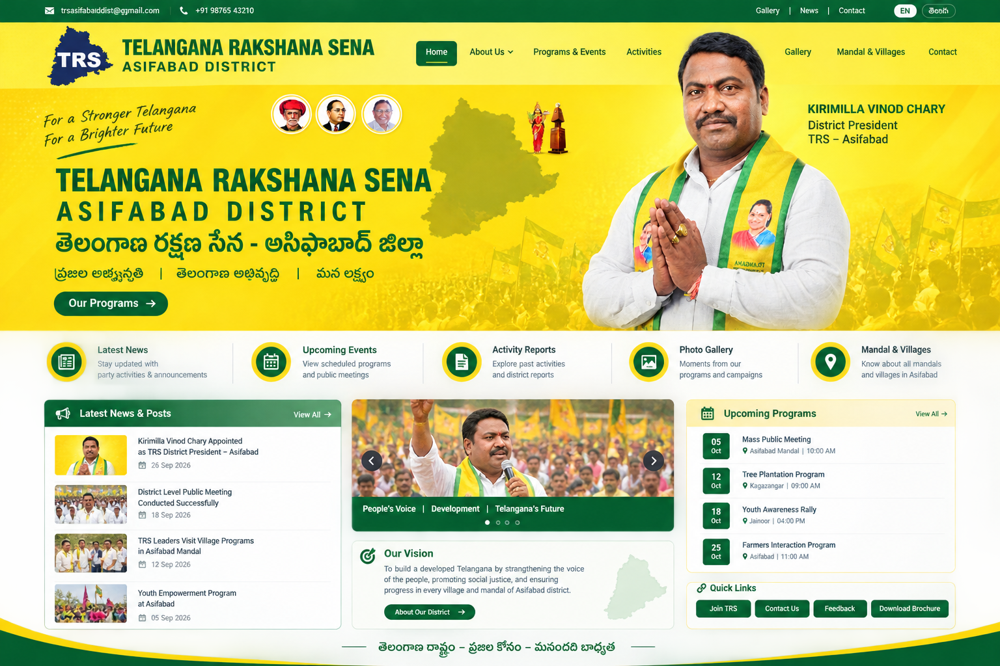

—DATE
COMMUNITY
District Program
Add the approved event title, date, location, and description through the future admin system.
Asifabad DistrictDISTRICT INFORMATION & PUBLIC SERVICE
తెలంగాణ రక్షణ సేన – ఆసిఫాబాద్ జిల్లా
District programs, activity updates, public announcements, and a simple way to share local issues.
WELCOME
This website is designed to organize district-level program information, publish approved announcements, and maintain an accessible archive of activities.
Information shown here should be reviewed and approved by authorized website administrators before publication.
Browse activity records →TRS District President · Asifabad
Portrait supplied by the website owner.WHAT'S HAPPENING
Add the approved event title, date, location, and description through the future admin system.
Asifabad DistrictPublish confirmed details here after an authorized editor reviews them.
Venue to be announcedUse this area to share public event information and follow-up notes.
Asifabad DistrictDISTRICT RECORDS
Published activity records will appear here when connected to the live database.
Sample content · Replace before launchKeep program dates, locations, descriptions, and approved media together.
Sample content · Replace before launchLATEST UPDATES
Use this section for approved announcements, press notes, and activity summaries.
Demo contentProvide accurate details and a clear contact channel for residents.
Demo contentLeadership updates should be confirmed by an authorized administrator before publication.
Portrait supplied by site ownerMOMENTS & MEMORIES

Website Concept ReferenceYOUR VOICE MATTERS
ప్రజా సమస్యల నమోదు
Use this form to describe a local concern. Submissions in this demo are saved only in this browser and are not sent to a district office. A live deployment needs a secure backend and authorized issue handlers.
Do not include passwords, bank details, identity document numbers, or other sensitive personal information. Your report will not be automatically published publicly.
GET IN TOUCH
Official contact details can be added here after they are verified by the website owner.